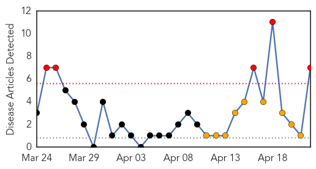
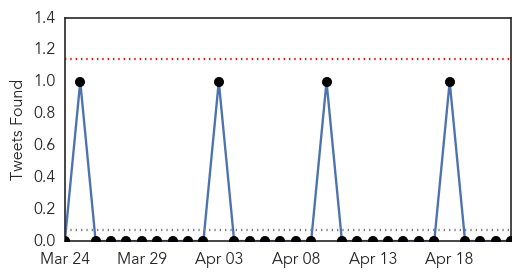
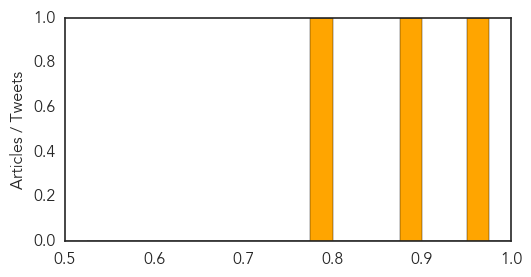

Mumps
30-Day Web Trend
5 alerts, 9 warnings

30-Day Twitter Trend
0 alerts, 0 warnings

Article Locations

Article Confidences

Top Articles:
- 0.999
- UPDATE: Mumps cases on rise at UW-Madison
- 0.996
- Possible mumps cases reported in Clark County
- 0.996
- Mumps outbreak 2014 has Illinois health officials on alert
- 0.995
- Ohio State starts initiative to encourage mumps vaccinations on campus
- 0.994
- Health agencies try to counter Ohio mumps outbreak
- 0.990
- Ohio State now urging mumps vaccinations
- 0.982
- Mumps outbreak among Ohio's largest
Top Tweets:
-
No tweets found for Apr 22, 2014
Swine Flu
30-Day Web Trend
1 alerts, 0 warnings
30-Day Twitter Trend
0 alerts, 0 warnings

Article Locations

Article Confidences
Top Articles:
Top Tweets:
-
No tweets found for Apr 22, 2014